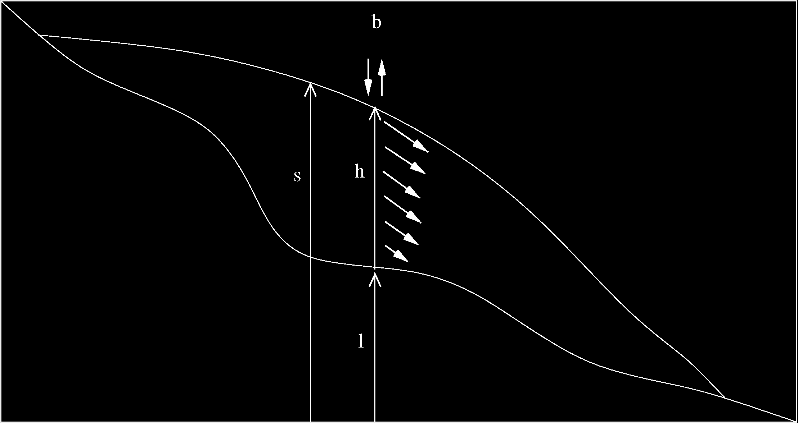

Cours 10#

Objectifs du cours#
Comprendre les mécanismes régissant l’évolution d’un glacier
Établir les principes physiques et formuler l’équation d’évolution en 1D
Discrétiser et résoudre l’équation en 1D
Implémenter l’équation 1D dans un code
Modélisation des glaciers#

Voir des modélisations sur https://jouvetg.github.io/the-aletsch-glacier-module/
Processus régissant l’évolution des glaciers#
La glace en mouvement#

Champ d’écoulement de la glace en Antarctique, les zones roses (plates-formes glaciaires où la glace flotte) affichent les endroits ou la glace est la plus rapide.
Consultez le site web de la NASA pour des animations.
Notations#

Nous introduisons les notations suivantes:
\(h\) est la hauteur de glace,
\(l\) est l’altitude du lit rocheux,
\(s=l+h\) est l’atitude de la surface du glacier,
\(b\) est le bilan de masse.
Equation de la glace en 1D#
En combinant la loi d’écoulement gravitaire de la glace avec le principe de conservation de la masse, nous obtenons l’équation d’évolution des glaciers:
où \(D(h)\) est la diffusivité de la glace, et \(f_d\), \(\rho\), et \(g\) sont des constantes.
Fonction bilan de masse \(b(s)\)#
Le bilan de masse annuel (en unité m/a) est la quantité de glace ajoutée par accumulation de neige qui se transforme en glace, moins la fonte. Celui-ci augmente avec l’altitude (puisque la fonte diminue avec la température). Un modèle simple de bilan de masse \(b(s)\) est une fct de l’altitude et de 3 paramètres: i) la ligne d’équilibre \(s_\mathrm{ELA}\) qui separe les zones d’ablation/accumulation, ii) le gradient du bilan de masse \(b_\mathrm{grad}\), iii) une valeur max. pour l’accumulation \(b_\mathrm{max}\).
Mathématiquement, la fonction s’écrit \(b(s) = \min ( b_\mathrm{grad} (s-s_\mathrm{ELA}), b_\mathrm{max} )\):
Equation non-linéaire#
L’équation de la glace est une équation de diffusion, sa spécificité est que la diffusion n’est plus qu’un paramètre constant, mais dépend de la solution: $\(D(h) = f_d (\rho g)^3 h^5 \left( \frac{\partial s}{\partial x} \right)^2.\)$
Rséolution numérique#
Une conséquence majeure de la non-linéarité de l’équation lors de sa résolution numérique est que la diffusion doit être recalculée (c’est-à-dire mise à jour) à chaque itération de la boucle temporelle, puisque celle-ci dépend de la solution.
Pas de temps et stabilité#
Puisque D change constamment, le pas de temps \(dt\), qui dépend de la valeur maximale de D, doit également être mis à jour dans la boucle :
La formule pour \(dt\) ressemble à la formule déjà utilisée avec deux spécificités :
i) Puisque \(D\) est variable, on prend sa valeur maximale.
ii) \(D\) peut être égal à zéro ou très grand. Pour éviter une division par 0, on impose une valeur max \(dt_{max}\) (p.e. 1 a).
Puisque le pas de temps est recalculé dans la boucle, nous ne pouvons pas connaître a priori le nombre d’itérations. La solution consiste à définir un grand nombre de pas de temps et à arrêter la simulation lorsque la variable temps dépasse le temps souhaité à l’aide d’une condition et de break.
Traitement de la grille est des dimensions#
Puisque \(D\) est une valeur qui s’applique à un flux, elle est placée entre les cellules du vecteur \(h\), et le vecteur \(D\) aura ainsi une taille de nx-1.
Il faudra donc que la hauteur de glace \(h\) utilisée pour calculer \(D\) soit la moyenne des deux cellules adjacentes:
0 1 ... i-1 i i+1 ... Taille
h |-----|-----|-----|-----|-----|----... nx
0 1 ... i-1 i i+1
h_mid = 0.5*(h[1:]+h[:-1]) |-----|-----|-----|-----|-----|-... nx-1
0 1 ... i-1 i i+1
dsdx = (s[1:]-s[:-1])/dx |-----|-----|-----|-----|-----|-... nx-1
0 1 ... i-1 i i+1
D=f_d*(rho*g)**3*h**5*(dsdx)**2 |-----|-----|-----|-----|-----|-... nx-1
Conditions de bord, bilan de masse, épaisseur>0#
Au bord du domaine, on impose une condition de Dirichlet en forçant l’épaisseur à être nulle:
h[0] = 0
h[-1] = 0
L’altitude du glacier \(z\), qui dépend de la hauteur de glace \(h\), ainsi que la fonction de bilan de masse, qui dépend de \(z\), doivent être placées dans la boucle temporelle.
Il faut inclure la commande
h[h<0] = 0pour s’assurer que la hauteur de glace \(h\) reste positive, car celle-ci pourrait devenir négative si le glacier est peu épais et que le bilan de masse est négatif.
A propose des unités#
Notons que les unités sont cohérentes:
\(Pa = Kg \, m^{-1} \, s^{-2}\)
\([f_d] = Pa^{-3} \, y^{-1}\)
\([\rho g] = Kg \, m^{-3} \, m \, s^{-2} = Kg \, m^{-2} \, s^{-2} = Pa \, m^{-1}\),
nous avons \([f_d (\rho g)^3 ] = Pa^{-3} \, y^{-1} \, Pa^3 \, m^{-3} = m^{-3} y^{-1}\) et donc \([D] = m^2 y^{-1}\), ce qui est cohérent.